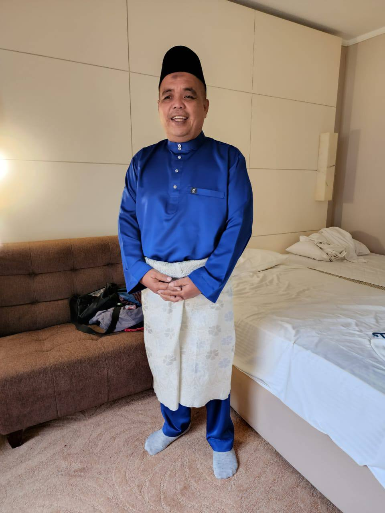

|
|
|
ayah
My father, though his hands are roughened with years of tireless labor, possesses a heart of gentle kindness. He wakes before the sun, dedicating himself to his work at Pejabat Tanah, ensuring the smooth functioning of our community's land affairs. Yet, his dedication extends far beyond his official duties. He pours his heart and soul into his own business, a testament to his unwavering spirit and determination. Despite his demanding schedule, my father always makes time for his family. He is a pillar of strength, a source of comfort and unwavering support. He anticipates every need and fulfills every desire, ensuring my every request is met with a smile and a "yes." He is not merely a provider, but a caring soul, always present with a warm hug and a listening ear. His love is a constant, a beacon guiding me through life's journey. In my father, I see a reflection of true strength and kindness. He is my hero, my role model, and the bedrock of our family. His life is a testament to the power of hard work, dedication, and unwavering love. And for that, I am forever grateful.